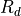
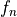
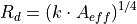
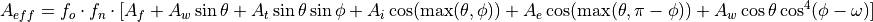

aircraft_signature_parameters¶
Overview¶
- aircraft_signature_parameters … aircraft_signature_parameters¶
aircraft_signature_parameters // Required Commands side ... // Optional Commands fuselage_frontal_area ... wing_area ... tail_area ... engine_inlet_area ... engine_exit_area ... sweep_angle ... signature_reduction_factor_overall ... signature_reduction_factor_nose ... nose_signature_reduction_angle ... end_aircraft_signature_parameters
Required Commands¶
- side [red ; blue]¶
Specifies the side for which the aircraft signature parameters apply. The available options are ‘red’ and ‘blue’.
The side command determines the default signature parameters. These can be overwritten with the Optional Commands.
For example:
# An aircraft of side blue will have the default signature parameters, except for the sweep angle. aircraft_signature_parameters side blue sweep_angle 40 degrees aircraft_signature_parameters
Optional Commands¶
The commands in this section are used to determine the expected detection range of the target aircraft (). An effective cross sectional area is computed (), which is used in an empirically-determined equation to obtain the detection range. The equation used is fairly simplistic and is used in the absence of more accurate aircraft signatures. Future releases will include more sophisticated mechanisms to accurately define radar signatures. Each command corresponds to a variable in the equations below. The following table defines the mapping between equation variable names and command names (or a description if no command exists):
command/description |
variable |
|---|---|
|
|
|
|
|
|
 |
|
azimuth angle |
|
elevation angle |
|
range constant |
|
effective cross sectional area |
|
expected detection range |


The expected detection range is computed using Equation (1). The range constant  is determined such that a
is determined such that a  target produces a detection range of
target produces a detection range of  . This results in a value of .
. This results in a value of .
(1)¶
The effective radar cross section is defined by the following equation:
(2)¶
Physical Attributes¶
- fuselage_frontal_area <area-value>¶
The frontal area of the aircraft fuselage (projection on the y-z plane) to be used when determining the radar cross section. See Equation (2).
Default: 3.0 m^2
- wing_area <area-value>¶
The wing area of the aircraft to be used when determining the radar cross section. See Equation (2).
Default: 30.0 m^2
- tail_area <area-value>¶
The area of the aircraft’s vertical tail to be used when determining the radar cross section. See Equation (2).
Default: 4.0 m^2
- engine_inlet_area <area-value>¶
The inlet area of the aircraft’s engine to be used when determining the radar cross section. See Equation (2).
Default: 2.0 m^2
- engine_exit_area <area-value>¶
The exit area of the aircraft’s engine to be used when determining the radar cross section. See Equation (2).
Default: 2.0 m^2
- sweep_angle <angle-value>¶
The sweep angle of the aircraft’s wing to be used when determining the radar cross section. See Equation (2).
Default: 45 degrees
Signature Reduction Factors¶
- signature_reduction_factor_overall <real>¶
The overall reduction factor of the signature. See Equation (2).
Default: 1.0
- signature_reduction_factor_nose <real>¶
The reduction factor of the signature due to the aircraft’s nose shape. This factor is only used if nose_signature_reduction_angle is more than the azimuth and more than the elevation. See Equation (2).
Default: 1.0
- nose_signature_reduction_angle <angle-value>¶
The nose angle used to determine signature_reduction_factor_nose. If nose_signature_reduction_angle is more than the azimuth and more than the elevation, then the effective radar cross section will be multiplied by signature_reduction_factor_nose.
Default: 45 degrees